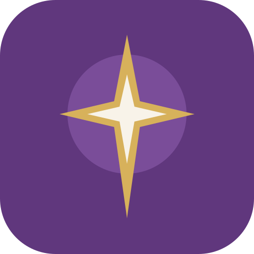
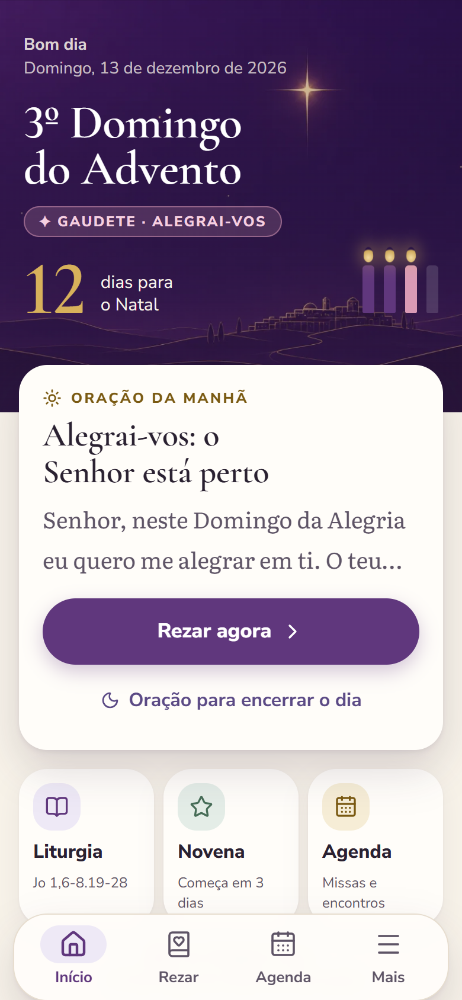
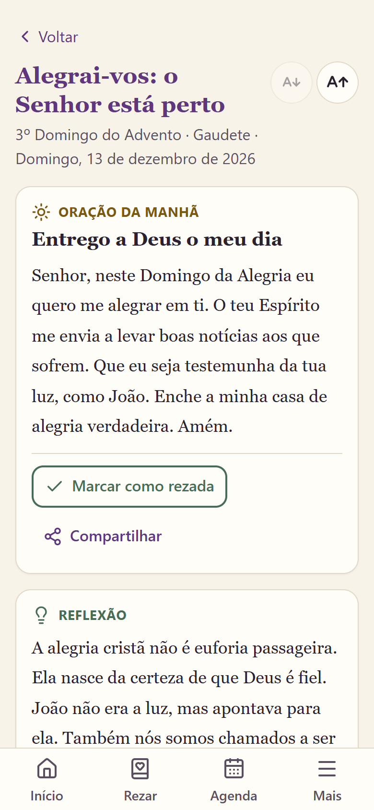
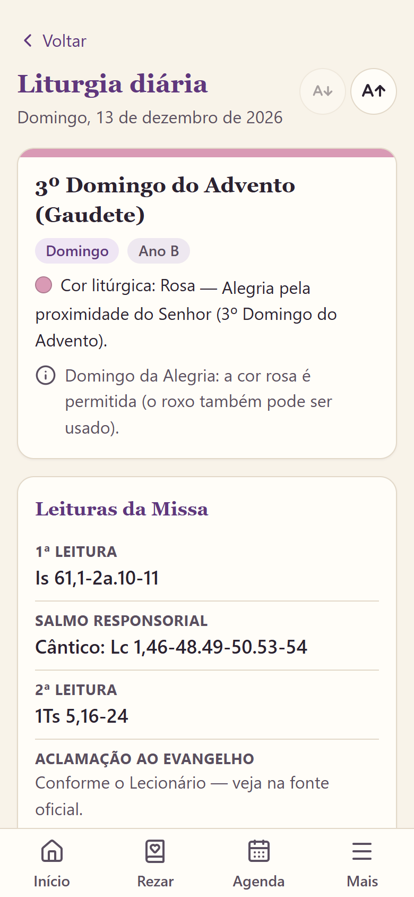
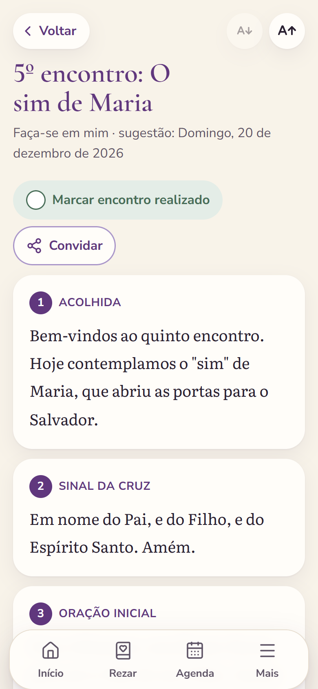
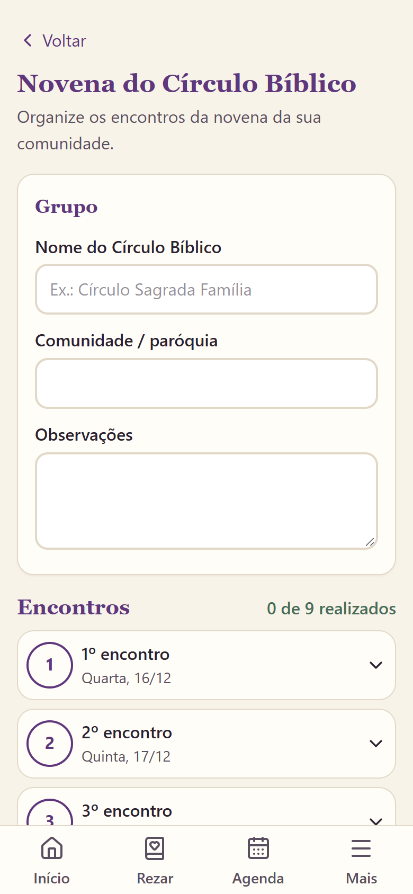
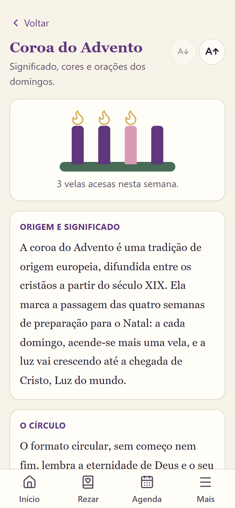
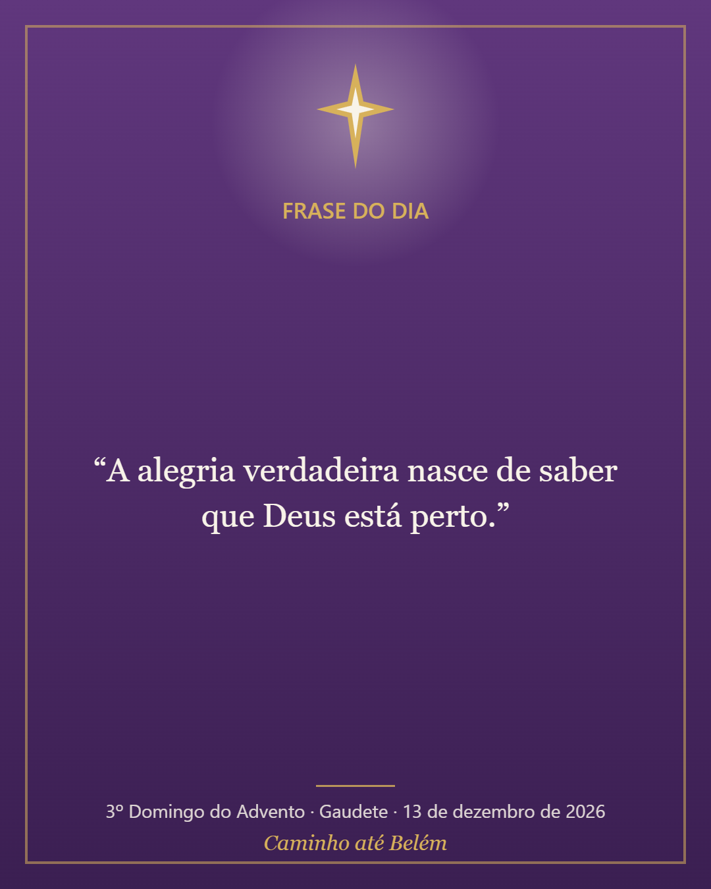

Uma jornada de fé, oração e esperança para celebrar o verdadeiro Natal.
Apresentação à Paróquia
Aplicativo para o Advento e o Natal de 2026

O propósito
O Advento muitas vezes é engolido pela correria das compras e das festas. O Caminho até Belém coloca no celular de cada pessoa um roteiro diário de oração, centrado em Jesus Cristo, que une a vida pessoal, a família e a comunidade.
Jovens, adultos e idosos; famílias; participantes dos Círculos Bíblicos e grupos de oração; catequistas e agentes de pastoral.
Pelo celular (Android ou iPhone), instalado na tela inicial como um aplicativo comum. Letras grandes, botões grandes e linguagem simples.
A jornada diária
Cada um dos 27 dias tem textos próprios, inspirados nas leituras daquele dia — nada é repetido.

Liturgia e Novena de Natal


A serviço da comunidade

Tradições e evangelização


Compromissos
Não inventa leituras nem atribui frases a santos, papas ou à Bíblia. Os textos próprios do app (orações, reflexões, novena) são identificados como autorais e só serão divulgados após revisão.
Não pede nome, e-mail ou telefone. Agenda, intenções de oração e documentos ficam somente no aparelho de cada pessoa, sem envio a servidores. Sem anúncios e sem rastreadores.
Três tamanhos de letra, alto contraste, botões grandes, compatível com leitores de tela e apenas quatro áreas no menu: Início, Rezar, Agenda e Mais.
Depois de aberto uma vez, orações, liturgia, novena, agenda e PDFs funcionam mesmo sem conexão — inclusive dentro da igreja ou na zona rural.
Próximos passos
Abrir o link no celular e tocar em "Adicionar à tela inicial". Leva cerca de um minuto, sem cadastro.
app.caminhoatebelem.com.br
O próprio aplicativo mostra o passo a passo para Android e iPhone.
Responsável pelo projeto: Warleson Brandão